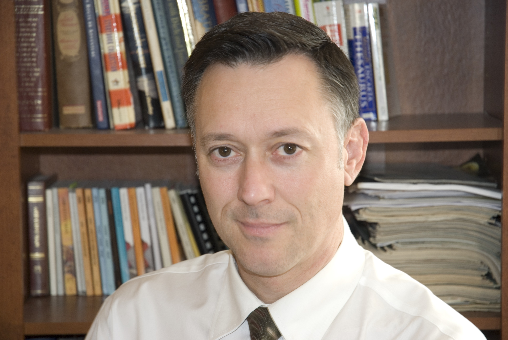

Summary
Experienced Technical Support with a demonstrated history of working in the biotechnology industry. Skilled in Consumer Electronics. Strong technology professional with a Studies in Applied Science focused in General Science. Experienced desktop application and inbedded PLCs programmer. Database integration with shipping system.
Always opened to new opportunities to learn something new. Trives in designing new electronic prototypes or new database applications.
Education
Studies in Applied Science

Sherbrooke College
1980 - 1981
Applied Science
Electronic Technologies

Teccart Institute
1982-1985
Internet Technology/Web Programming AST
Penn Foster
July 2004-January 2005
Work experience
Engineering Technician
DEKA Research & Development · Full-time
Jul 2021 - Present · 2 yrs 11 mos
Manchester, New Hampshire, United States
Supporting system engineers in the calibration and testing of new device components and in the development of new medical devices. Research substitutes for EOL components. Maintain test stations and document test results for units under test. Populating PCB for new prototype.
Technical Support Specialist
Eppendorf, Inc.
Aug 2014 - Jul 2021 · 7 yrs
Enfield, Connecticut
Write technical service documentation and update current service manuals in the company database. Teach in a class environment to train service engineers on large scale centrifuges. Perform Factory Inspection Test with the customers. Train Scientists on the operation of their new BioReactor and Fermentor. Help customers with the integration of our automation software with Eppendorf Fermentor/BioReactor.
Lead
Eppendorf Inc.
Oct 2012 - Aug 2014 · 1 yr 11 mos
Enfield, Connecticut
Wiring and testing of Allen-Bradley control panels. Supervising the production of Large Scale Bioreactors.
Assembler
Eppendorf
Jan 2012 - Oct 2012 · 10 mos
Enfield, Connecticut
Assembler of Bioreactors in the Fermentation department.
Director of Engineering
Precision Camera
Mar 2008 - Mar 2011
Enfield, Connecticut
- Supervise a group of senior technicians. Create cost saving solutions for the repair department and assign cost saving projects to senior technicians.
- Designed a digital lens testing device that enabled the company to save over a million dollars in cost saving. Wrote the schematic and designed the PCB for the digital testing device. Lead the manufacturing of the device and wrote the user documentation. Create service manuals for digital lenses. Evaluate new products for manufacturers and write technical documentations on corrective measure before the end of production. Provided a waterproof testing solution for Panasonic digital cameras.
- Automated the creation of reports with pivot tables in Excel using Visual Basic programming. Create monthly performance metrics reports for OEMs and lead the monthly conference call with Kodak on performance metrics reports. Responsible for the technical communication between Precision Camera and the different manufacturers the company does business with. Internal communication between repair departments and resolution of technical issues within the company.
OEM Account Manager
Precision Camera
Sep 2005 - Mar 2008
Enfield, Connecticut
Managed the production of 43 service technicians of the Sony department. Preparing reports, writing technical observations for the Sony support engineering group in California on defective products and giving suggestions based on analysis performed on selected models.
Service Technician
Precision Camera
May 2000 - Sep 2005
Enfield, Connecticut
Component level troubleshooting with various test equipment (multimeter, oscilloscope, vectorscope.) Performed tape path alignment, white balance calibration and adjusted video output with oscilloscope. Verified color reproduction accuracy with vectorscope. Strong troubleshooting skills using schematics. Extended experience on surface mount soldering techniques. Expertise in optical elements and their functionalities with digital devices.
Skills
- Fluent in French, English and can converse in Nepali
- Troubleshooting electronic circuitry to component level
- PCB design
- SMT soldering
- Work Flow planning
- Management
- Visual Basic
- Python
Certifications
IPC-610 certified. - Acceptability of Electronic Assemblies
CEPA large scale centrifuge certified
Hobbie & Interests
Photography, Biking, Programming, Woodworking